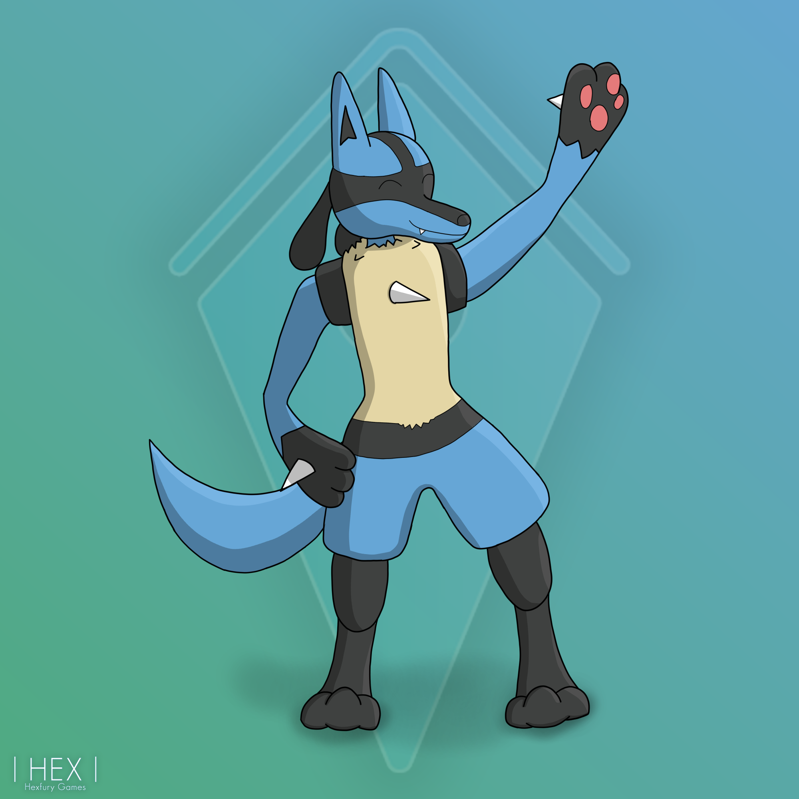
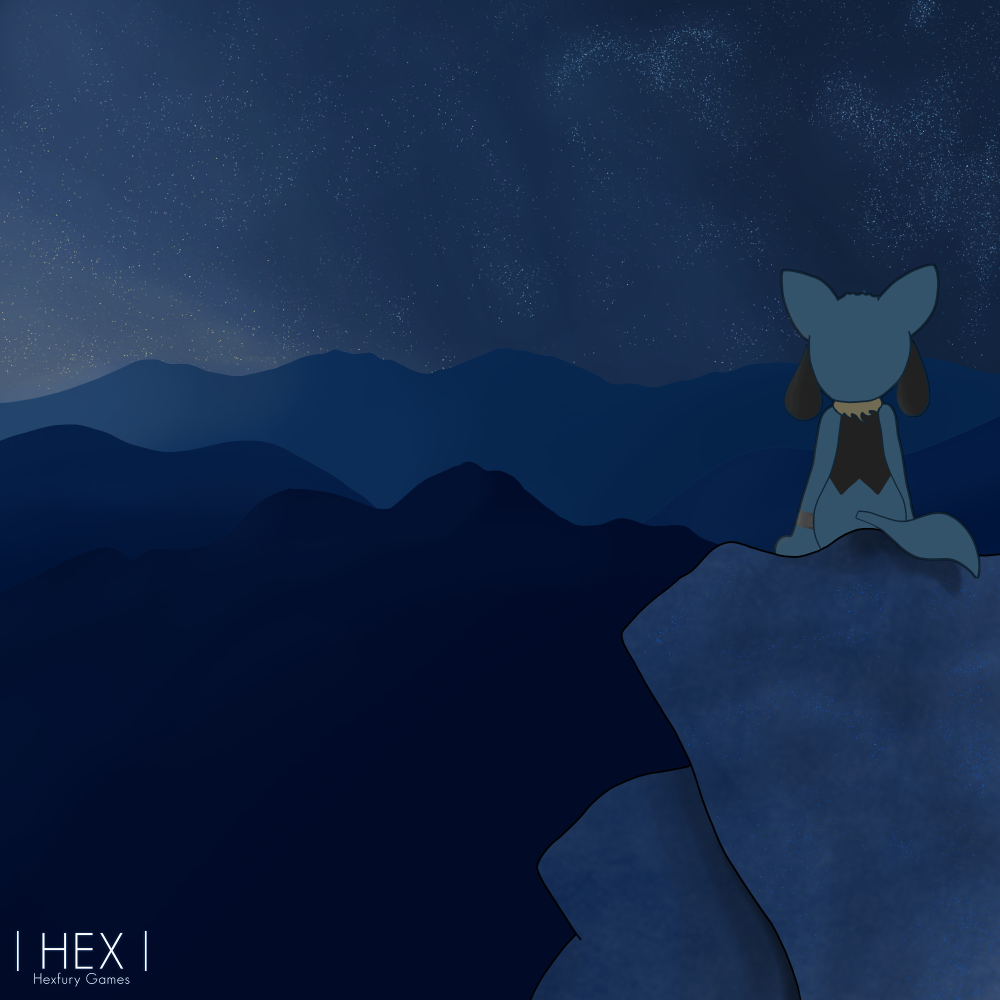
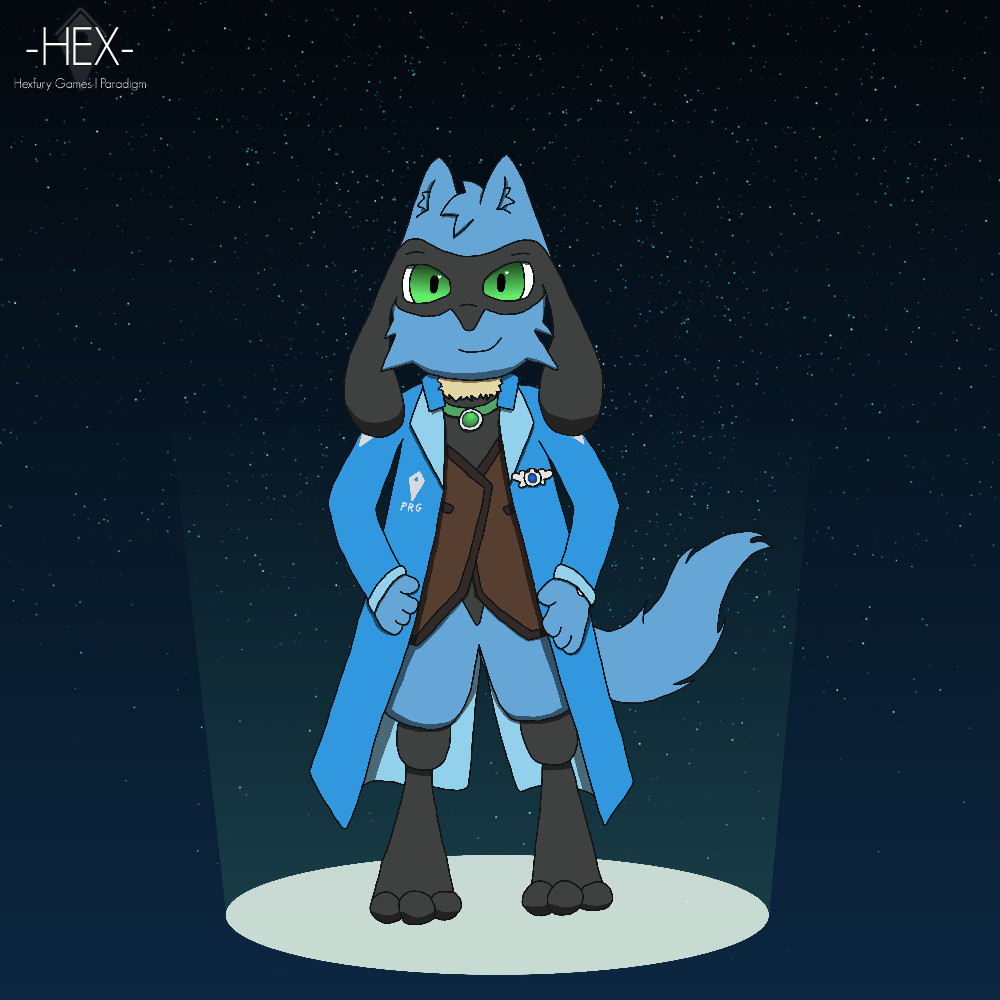
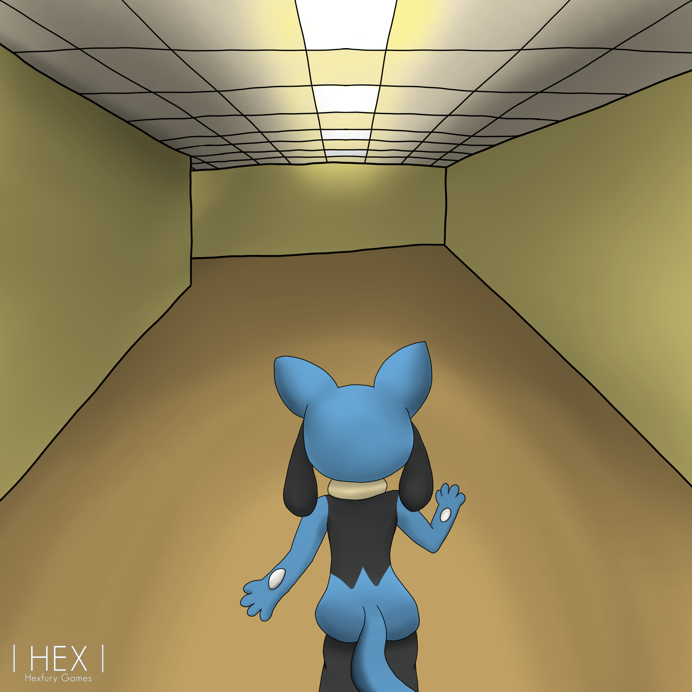
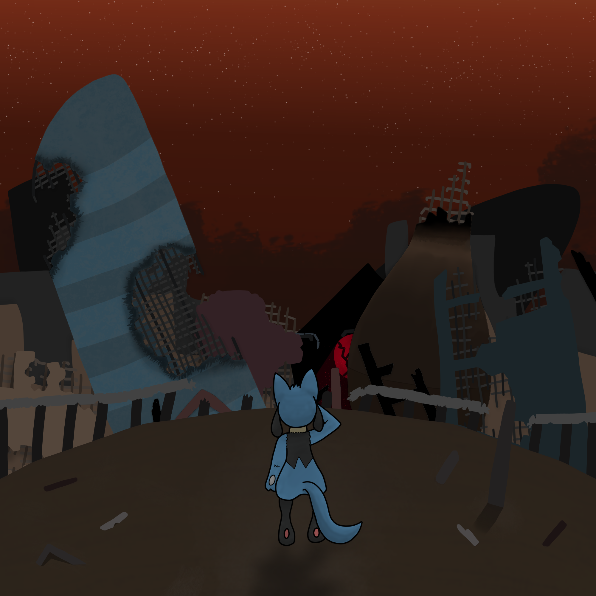

My Gallery
Welcome to my creative archive. Below is a curated collection of character drawings, graphic commissions, and worldbuilding visuals. Click on any frame to activate the high-resolution overlay.
Art Archives






